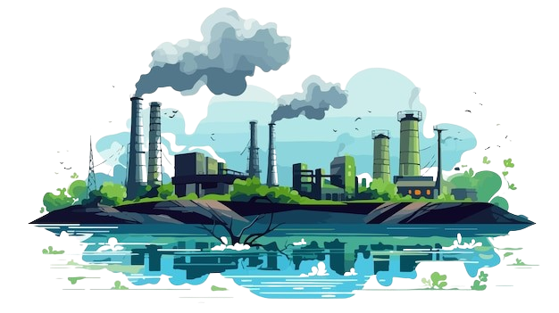

| THE BREATH WE SHARE |
Unveiling the Story of
Air Pollution
Discover the scale of air pollution,
its devastating health impacts, and the critical
sources behind it. A visual exploration paving the way
for solutions and a cleaner, healthier future.
SCROLL DOWN

Contextual Background
Air pollution poses a critical threat in East and Southeast Asia where over 90% of the 2.5 billion population is exposed to unsafe air, resulting in approximately 900,000 premature deaths annually, primarily from fine particulate matter (PM2.5) linked to industrial emissions, fossil fuel combustion, and transboundary forest fires (UNEP, State of Global Air).
Urban centers like Jakarta, Bangkok, and Singapore face hazardous air quality exacerbated by seasonal and climatic factors, with Jakarta ranked the world's most polluted city in 2021, while smaller nations such as Brunei and Singapore suffer significantly from transboundary pollution (Science Direct).
This project visualises Southeast Asia's air pollution to illuminate its challenges, health impacts, and sources, driving awareness and fostering action toward cleaner air and healthier communities.
| THE BREATH WE SHARE |
Aim & Objectives
This project aims to raise awareness of air pollution's pervasive impact on health, livelihoods, and the environment in Southeast Asia, inspiring action to combat this pressing issue. Through compelling data-driven storytelling, it seeks to empower individuals, communities, and policymakers to drive meaningful change for cleaner air and healthier futures.
- Raise Awareness - Educate audiences about the scale and severity of air pollution and its far-reaching effects on health and the environment.
- Foster Understanding - Demonstrate the link between pollution levels and their devastating impacts on public health to urge for intervention.
- Promote Accountability - Highlight the sources and contributors of air pollution to advocate for responsible practices and policies.
- Encourage Action - Motivate individuals, organisations, and governments to adopt sustainable solutions for improving air quality.
- Inspire Collaboration - Encourage regional and international cooperation to address shared challenges and achieve long-term solutions.
Understanding the Current State of Global Air Quality
Air Quality Index (AQI) Across Countries: A Visual Bubble Chart Data
Visualisation Features
Different colours represent AQI levels from 'Good' to 'Hazardous'. Hover over a bubble to view detailed air quality information. Use the region filter below to view AQI data for different areas. Click on a bubble to view AQI data for the country's main cities.
What is AQI?
The AQI represents air quality based on measurements of particulate matter (PM2.5 and PM10), ozone (O3), nitrogen dioxide (NO2), sulfur dioxide (SO2), and carbon monoxide (CO).
Filter by Region
This visualisation highlights global air quality disparities. Regions with high AQI values face health risks, emphasising the need for monitoring and policy interventions to address air pollution.
AQI Ranking by Country
City AQI Details
Air Pollution Exposure and Health Impacts in Southeast Asia Data1 Data2
1990 2020
Current Year:
Choropleth Description
This visualisation shows the link between PM2.5 exposure and health effects across Southeast Asia from 1990 to 2020. The circle size represents the average PM2.5 concentration (µg/m³), with larger circles indicating higher pollution levels. The background colour encodes the Disability-Adjusted Life Years (DALYs) lost per 1,000 inhabitants, with darker red shades reflecting greater health impacts. This highlights the relationship between pollution exposure and its significant toll on public health.
Visualisation Features
Use the play button to animate the data from 1990 to 2020 or adjust the time slider manually. Hover over a country to view its DALYs for the current year, with rankings displayed below. Hover over a circle to see the country's mean population-weighted exposure in average PM2.5 concentration. Clicking a circle provides detailed information on population exposure at various pollution levels.
PM2.5 Exposure Levels
DALYS Rankings
Contribution of Air Pollution Sources by Sector in 2021 (%) Data
Global Pollution Source Analysis